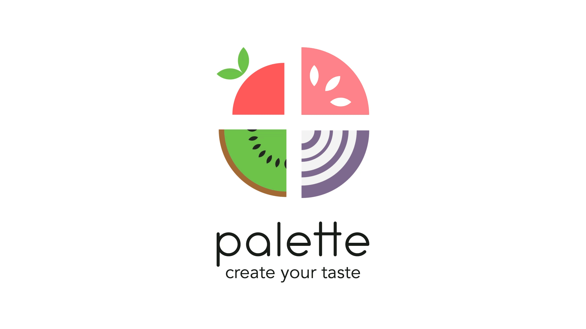
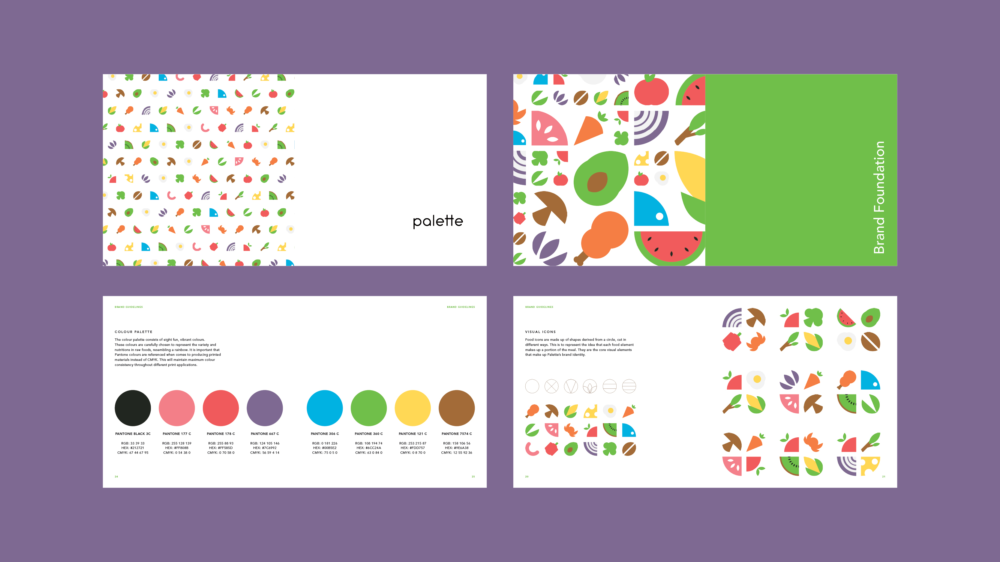
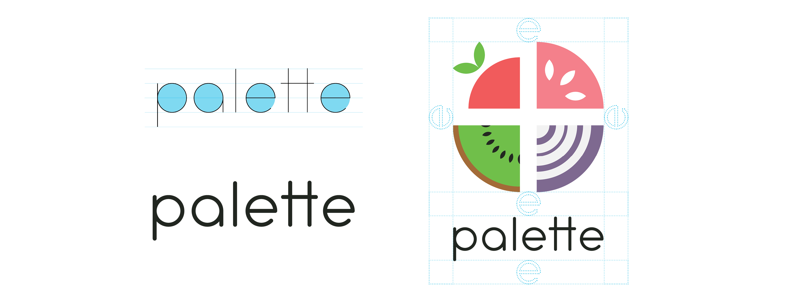
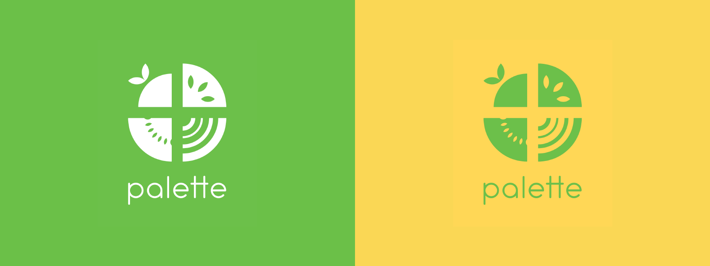
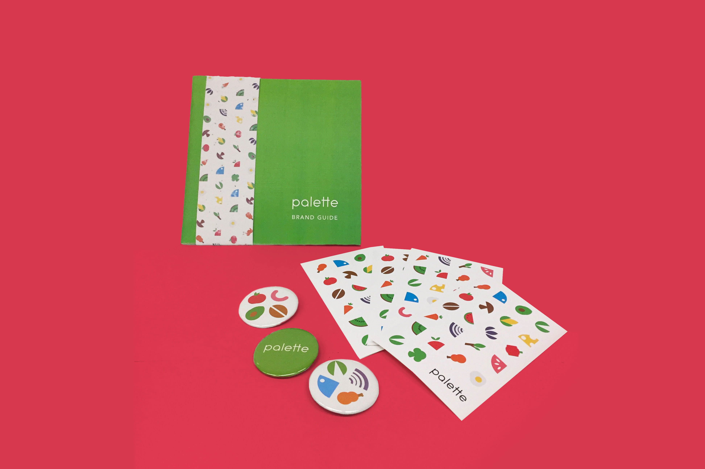
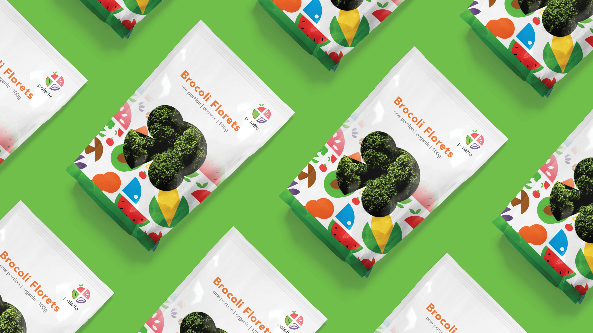
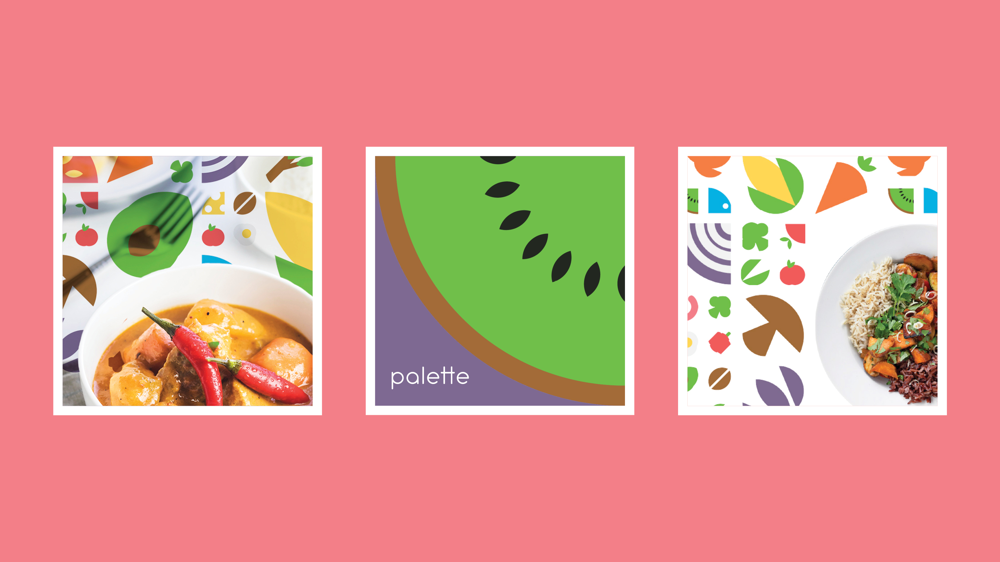

Palette |
|
A brand that aims to reduce food waste. |
|
Our culture is embedded in bulk sizes. We are encouraged to buy large-portions, cook in bulk, and store bulk ingredients into smaller portions because it’s efficient and it saves money. This model may have worked for the traditional family-structured households, but unsustainable with the growing trend of Canadians living alone. One-person households accounted for 28.2% of all household types in 2016 in Canada — the highest share since Confederation in 1867.
With Canada’s changing household structure and our bulk-purchasing habits, food waste becomes even more problematic in the 21st century.
Palette presents consumers with the option to purchase food items in smaller quantities. Targeting the single-household population, those who cook for themselves can have access to a variety of foods without worrying about leftover ingredients. By allowing customers buy only what they need, not only are they saving money, they are also contributing to the efforts of eliminating food waste. In addition, the smaller servings will encourage experimentation with different recipes without needing to commit to bulk sizes. The small-packaged goods offer variety, convenience, and a solution to reduce food waste.
Palette’s branding tells the story from a creative perspective. My initial drafts had more green elements, but it would only appeal to customers that are already environmentally conscious. Focusing on the creative perspective would attract a larger pool of shoppers. The goal is to encourage consumers to cook, have fun in the process, and feel good about their efforts towards the environment.






